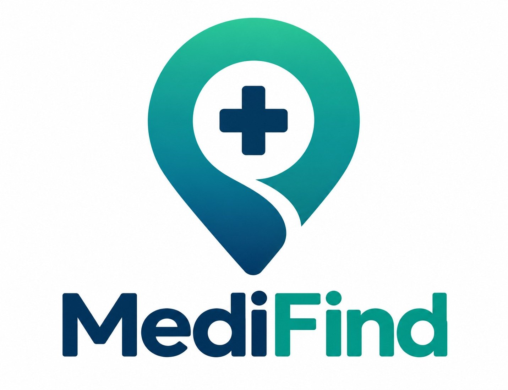

Em desenvolvimento/2026
MediFind - Plataforma de Busca e Agendamento de Consultas Médicas
Desenvolvimento de uma plataforma web voltada a facilitar a busca por médicos e o agendamento de consultas, permitindo aos pacientes encontrar profissionais por especialidade, localização e plano de saúde. O sistema contempla funcionalidades de cadastro e gerenciamento de pacientes e dependentes, consulta de horários disponíveis, agendamentos e avaliações de profissionais.
Áreas trabalhadas: Front-End, Desenvolvimento Web, UX/UI, prototipação e modelagem de dados.
